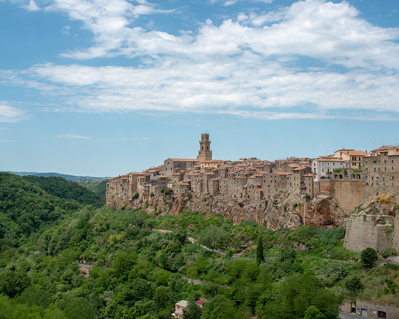
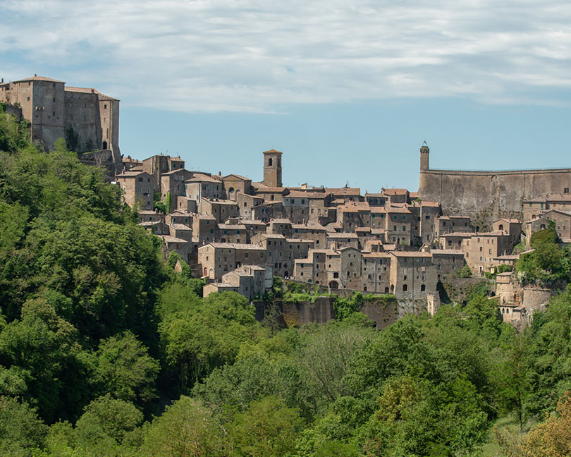
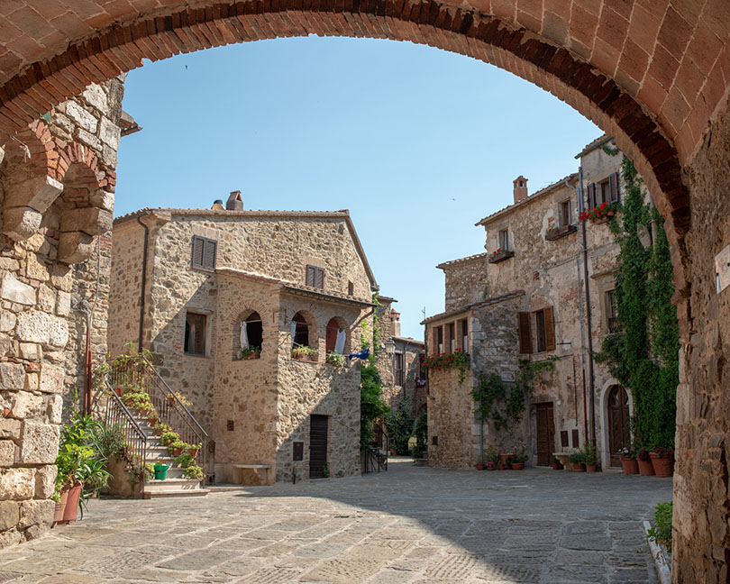

はじめに
トスカーナ南西部のマレンマ地方はラツィオとの州境にあり、ローマとフィレンツェの中間ぐらいに位置する。 オルヴィエートの西50kmの距離で車で一時間ほど。 マレンマ地方には知名度は低いがいくつの美しい小さな町がある。 ピティリアーノ、ソラーノ、ソヴァーナの3つの町はそれぞれが10km範囲にあるので車があれば行きやすい。 これらの町はオルヴィエートと同じく凝灰岩という火山灰が堆積されて形成された岩石の上にある。
ピティリアーノ(Pitigliano)

ピティリアーノは3つの町の中で一番大きく端から端まで700mほどの大きさがある。 凝灰岩の切り立った崖とその上にたつ中世からの建物が壮観で素晴らしい。 旧市街は西方向に半島状に突出しており南・西・北の三方向が断崖に囲まれている。 ピティリアーノはイタリアの小さなエルサレムとも呼ばれ、 16世紀以降迫害をのがれてきたユダヤ人が長く住んでいた。 現在でもシナゴーグが残っている。
新市街の南側のSan Michele通りから旧市街が崖越しに見ることができる。
ソラーノ(Sorano)

ソラーノもピティリアーノと同様は半島状に突出した凝灰岩の上に作られた町。 規模はだいぶ小さく、森のなかにひっそりと佇んでいる。 旧市街の南西部の入り口からみる屋根が広がる風景や町の東側から見上げる町が印象的だった。
ソヴァーナ(Sovana)
この町は本当に小さく、町の中心のプレトリオ広場と大聖堂をつなぐ道が並行して二本あるだけの小ささ。 道は花と町の旗とで飾り付けされている。町には何もないだけに雰囲気はある。 飾りけのないロマネスク調の大聖堂が町に調和している。
モンテメラーノ(Montemerano)
 モンテメラーノはピティリアーノから20kmほど西にある人口500人程度の小さな町。 ここも凝灰岩の上にできた小高い丘に佇む町。 はほとんど観光客がいなく、余計な看板なども無い。 メインの通りから階段を登ったところにあるカステッロ広場は 中世から何も変わっていないのではないかと錯覚してしまうほどの美しさ。 実はこの町のことは来るまではほとんど何も知らかったので嬉しい誤算だった。 イタリアの最も美しい村々の一つであると知り納得できる。
この町にはダ・カイーノというレストランがあり、そこで食事をするのが目的で訪れた。 遠回りをしてでも訪れる価値があるという評価に値するレストランだった。 ヨーロッパの地方の高級レストランはホテルが併設されている場合が多い。 レストランで食べ終わったらすぐに部屋に戻れるというのも良い。
フォトギャラリー
旅程
- 一日目: オルヴィエートからピティリアーノなどの町を廻る。モンテメラーノ泊。
- 二日目: モンテメラーノを散策して次の目的地へ。